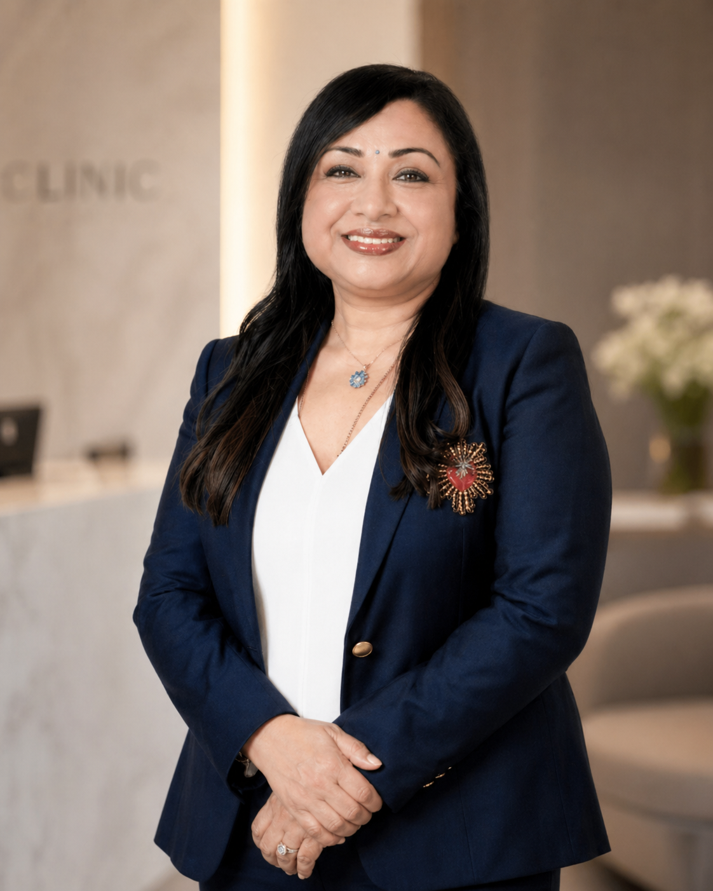
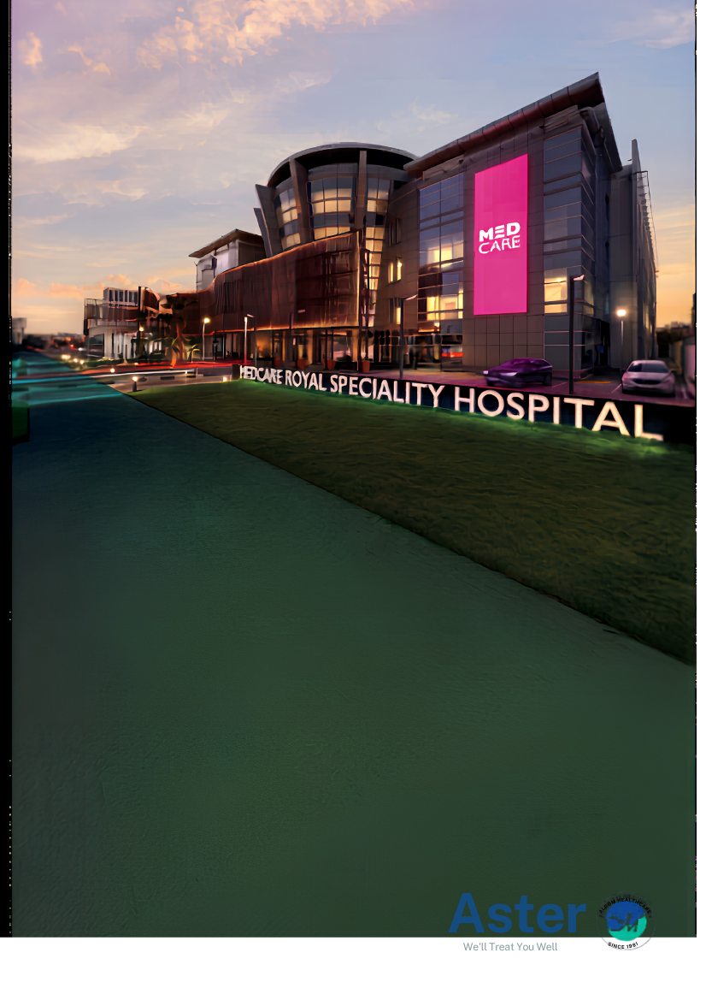

Laparoscopic surgery
Advanced minimally invasive procedures including hysterectomy, myomectomy, ovarian cystectomy and adhesiolysis — performed with a focus on faster recovery and minimal scarring.
Read more →Dr. Shiva Harikrishnan is a Senior Consultant Obstetrician and laparoscopic surgeon practising at Medcare Royal Speciality Hospital in Dubai — with deep expertise in advanced gynae-laparoscopy, endometriosis and high-risk pregnancy.

Six specialised programmes built around the questions women bring most often. Each one is led personally — no rotating teams, no relays.
Advanced minimally invasive procedures including hysterectomy, myomectomy, ovarian cystectomy and adhesiolysis — performed with a focus on faster recovery and minimal scarring.
Read more →
Diagnosis and surgical management of endometriosis — including deep infiltrating disease — combined with long-term medical and lifestyle support tailored to each patient.
Read more →
Specialist care for complex pregnancies — pre-eclampsia, gestational diabetes, recurrent miscarriage, and pregnancy after surgery — with close monitoring throughout each trimester.
Read more →
Annual examinations, contraception counselling, menstrual disorders, PCOS management and menopause care — the everyday work of looking after a woman's health.
Read more →
Comprehensive antenatal care, normal & complex deliveries, caesarean sections, and post-natal follow-up — with care continuity from first scan to first weeks at home.
Read more →
Pre-conception counselling, ovulation induction, fertility evaluation, surgical correction of fibroids, polyps and tubal disease — pathways towards parenthood.
Read more →Short, accurate videos on the conditions women ask about most often — recorded in clinic, free of jargon, free of fear-mongering.
The most common misconceptions women hear about endometriosis — and what's actually true.
A complex case study — large fibroid, minimally invasive approach, fast recovery.
Vaginal Natural Orifice Transluminal Endoscopic Surgery: scarless, faster recovery, no abdominal incision.
Real patients. Real surgeries. Real outcomes — recorded with their permission.
A patient shares her experience with Dr. Shiva at Medcare — from first consultation through to surgery and recovery.
An endometriosis patient on the difference a correct diagnosis and the right surgical plan made.
Dr. Shiva sees patients and operates at one of the region's leading specialist hospitals for women and children — with full access to advanced laparoscopic theatres, high-risk obstetric units, and 24/7 maternity care.
Al Qusais · Dubai, UAE

A glimpse into the operating theatre, the consultation room, and the moments in between.


Same-week appointments are usually available. Tele-consultations are offered for patients abroad. Insurance is accepted — please bring your card to the first visit.
Book now →